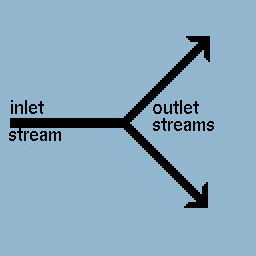

|

The Gas Separator module is used to separate a single specie out of a mixed gas stream. |

The user inputs which specie is to be separated from the gas stream as well as the desired purity. The Remaining input is the percentage of the specie that will remain in the non-pure stream. For example, from the inputs shown at left, the separated stream will be 95% argon, whereas the main gas stream will have only 1% argon concentration.